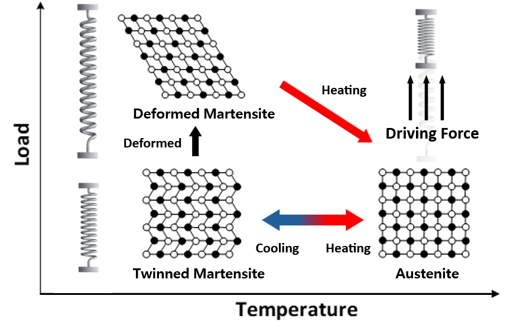

Actuator power density
Electrical drive approaches that support high torque and sustained loads within a compact robot.
KAIST INTEGRATED POWER CIRCUIT LAB
APPLICATIONS
Compact power systems for dynamic robotic loads
Humanoid robots combine many actuators within a limited mass and volume. Their power systems must handle rapid changes in motor demand while maintaining stable supply voltages. Research connects actuator power density with power management and DC-link regulation.
Explore projects
RESEARCH OVERVIEW
Electrical drive approaches that support high torque and sustained loads within a compact robot.
Power conversion that limits voltage excursions as motors accelerate and decelerate.
Use of load profiles and converter comparisons to guide power-system design and validation.
RESEARCH IN PROGRESS
Project snapshot · June 2026
PROJECT 01
Research partner
The project studies a hybrid actuator that combines a motor with a shape-memory alloy (SMA). The motor provides fast response and precise position control, while the SMA supplies supporting torque for sustained loads. The aim is to reduce actuator mass while supporting heavier loads.
Combine the motor’s response and positioning capability with the SMA’s force and mass characteristics.
Account for the temperature-dependent behavior and slower thermal response of the SMA.
Investigate how the two actuation mechanisms can work together within the robot’s mechanical and electrical constraints.
